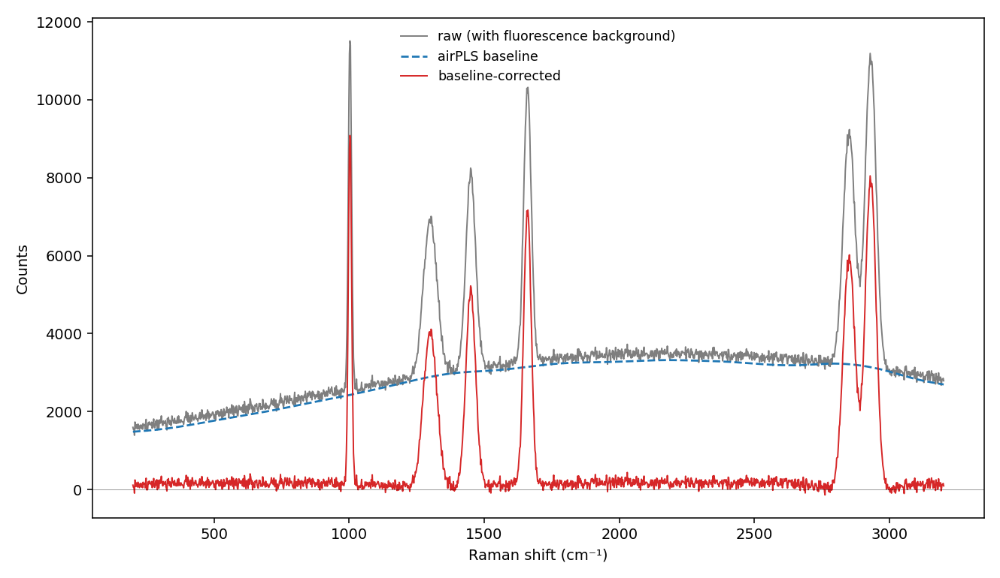
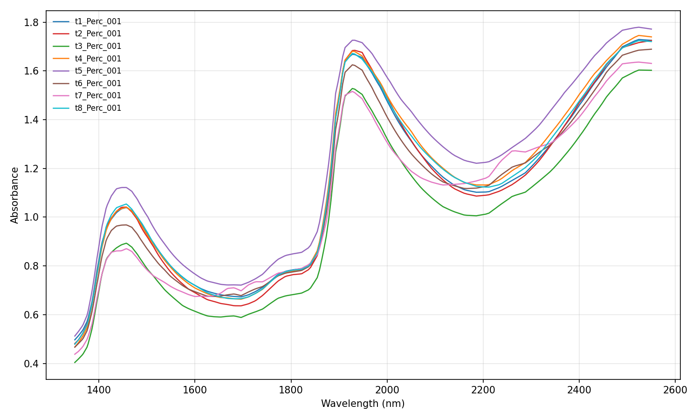
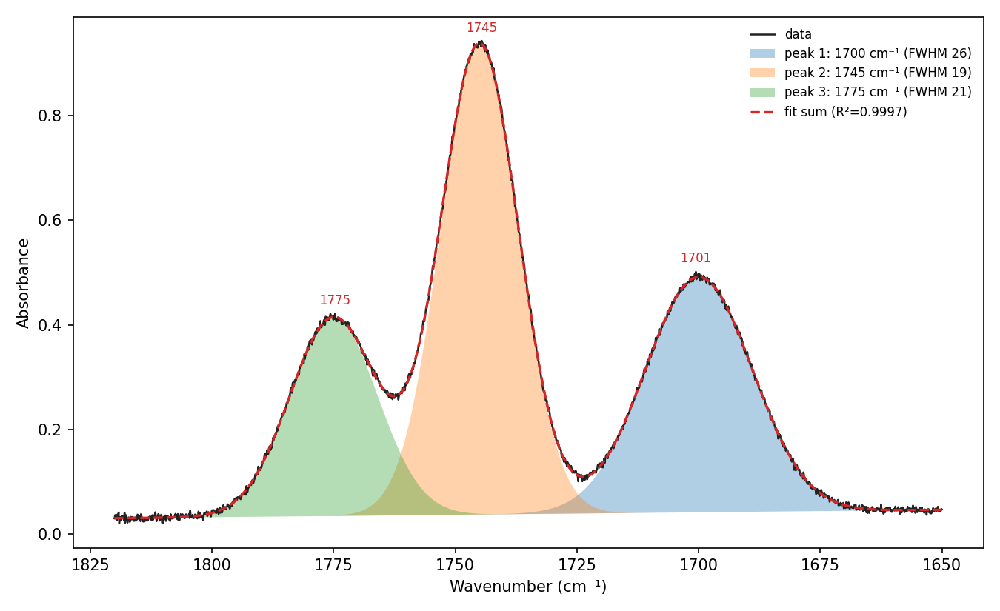
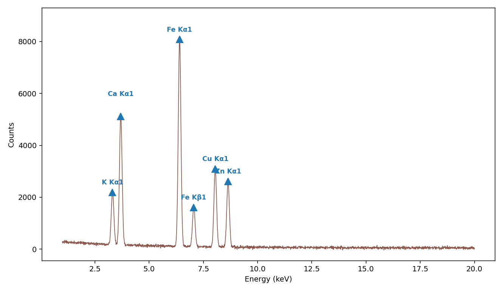
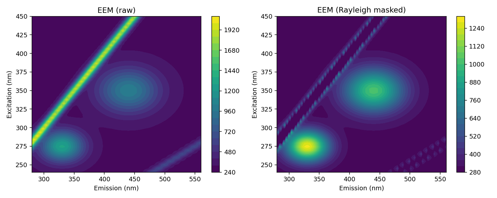
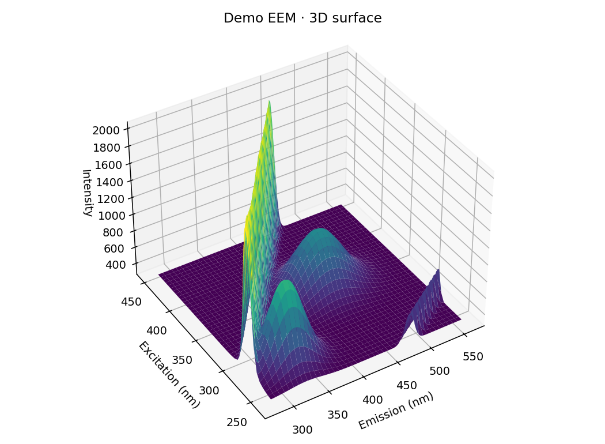
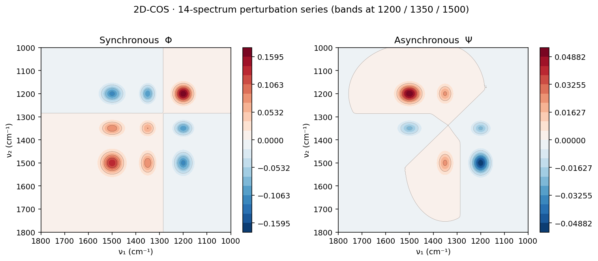
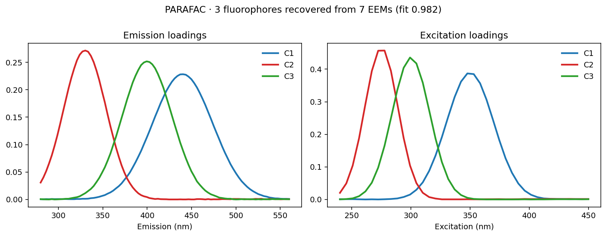
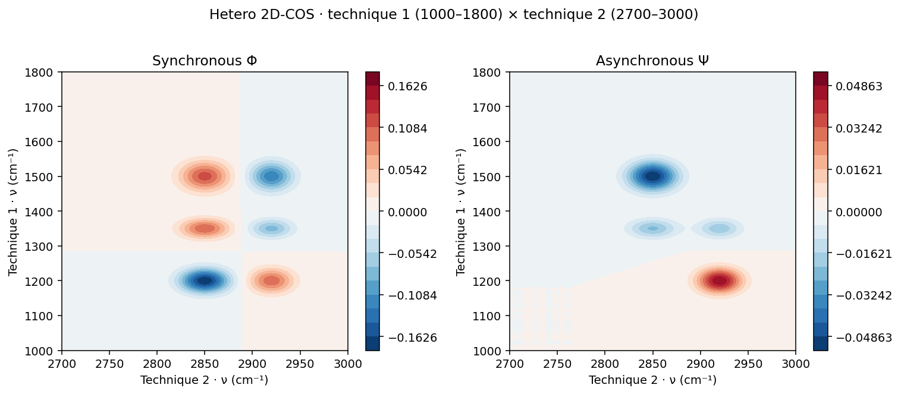

它在化學計量工作流的哪一段？
PCA / PLS / PLS-DA 的成敗，七成在「前處理」。SpectraView 就是把載入、前處理與檢視 這段做成所見即所得的桌面操作，再一鍵匯出乾淨的資料矩陣，交給 Orange 或 scikit-learn 建模。
化學計量前處理：為什麼非做不可
同一批樣品，散射、基線與儀器漂移會讓 PCA 第一主成分整個被「物理雜訊」佔據。 下面每個前處理都對應一種要消除的干擾。
基線校正（airPLS）
Raman 的螢光背景、NIR 的散射斜坡會壓過真正的化學訊號。airPLS（Zhang 2010）自適應地把背景估出來扣掉，尖峰完整保留。另含 Rubberband、多項式、非對稱最小平方 ALS。

SNV / MSC · 微分 · 正規化
粒徑與光程差造成的乘性散射，用 SNV（標準常態變量）或 MSC（多元散射校正）拉平；一階／二階微分（Savitzky-Golay）去基線漂移、凸顯重疊峰；正規化讓樣品可比較。這些正是 NIR/PLS 定量前的標準配方。

▶ 互動：前處理 playground
光譜分析：從峰到成分
前處理之後，SpectraView 也能直接做定性與半定量分析——很多時候不必先進到化學計量就有答案。
尋峰 · 峰形擬合 / 去卷積
自動尋峰（含 FWHM），再用 Gaussian / Lorentzian / Pseudo-Voigt 擬合，把重疊的吸收帶拆成各自的分量、算面積。食品脂肪的羰基（C=O）區就是典型例子。

XRF 元素鑑定
對 keV 能量軸的 XRF 譜尋峰，比對內建特徵譜線表（Kα/Kβ/Lα/Lβ，元素 Z=11–92），在圖上直接標出元素。食品礦物 K、Ca、Fe、Cu、Zn 一目了然——這正是 XRF 食品鑑別的入口。

混合物濃度推算
以純物質參考譜，非負最小平方解 mixture ≈ Σ cᵢ·refᵢ，回推各成分比例與 R²。摻偽比例、調合油組成的快速估計。
光譜庫相似度比對
自建 .speclib 參考庫，拿未知譜比對；命中清單同列相關係數、cosine、光譜角 SAM、歐氏距離，一鍵疊圖。
8 種格式 · 一鍵匯出矩陣
讀 ASCII / JCAMP-DX / SPC / OPUS / JSON / MATLAB；合併匯出可選「每列一樣品」的 X-matrix，直接餵 scikit-learn 的 PCA / PLS。
二維：螢光 EEM 與 2D 相關光譜
當資料本身是「矩陣」（螢光 EEM），或是「一系列隨擾動變化的光譜」，1D 疊圖看不出全貌。SpectraView 內建兩種二維分析。
EEM（激發-發射矩陣）· 2D + 3D
讀 ex×em 矩陣檔（Horiba/Aqualog 等），或由多條發射光譜組成；2D 等高線熱圖＋可旋轉的 3D 表面，並一鍵遮除 Rayleigh／Raman 散射脊（沿 em≈ex、em≈2·ex 的對角亮線）。

EEM 3D 表面
同一份 EEM 的可旋轉 3D 表面圖（滑鼠拖曳轉視角）。兩個螢光團的峰與背景散射脊一目了然，適合課堂展示與報告。

2D-COS（同步 / 異步）＋ 2T2D
對一系列隨溫度／濃度／時間變化的光譜，算同步 Φ 與異步 Ψ 相關圖：對角是自相關峰，off-diagonal 交叉峰看出哪些譜帶一起變（同步）或先後變（異步、含順序）。只有兩條譜時用 2T2D。數學與 2Dshige / 2Dpy / R corr2D 一致。

EEM PARAFAC 平行因子分解
一疊多樣品 EEM，用 PARAFAC（交替最小平方、非負約束）盲解成各螢光成分的激發／發射輪廓與每個樣品的相對濃度（分數）。下圖從 7 個混合 EEM 還原出 3 個螢光團（fit 0.98），是 DOM／食品螢光定量的標準做法。

Hetero 2D-COS（異質相關）
兩種不同技術（如 IR × Raman、NIR × 螢光）量同一批樣品，做異質二維相關，得到非方陣的同步／異步圖：哪一段 IR 吸收和哪一段 Raman 位移一起變、誰先誰後。在 2D-COS 對話框選「Hetero」，把選取的光譜前半當技術 1、後半當技術 2。

▶ 互動：2D-COS 即時計算
搭配這些化學計量課程一起用
先用 SpectraView 把光譜整理、看懂、匯出，再進到各技術的 PCA / PLS / PLS-DA 教學包親手建模。
下載與安裝
純 Python 桌面程式（PySide6 + pyqtgraph + numpy/scipy）。Windows / macOS / Linux 皆可。
🪟 Windows 安裝
按鍵盤 ⊞ Win，輸入 PowerShell，按 Enter 開啟（不需要系統管理員身分）。
# winget 是 Windows 10／11 內建，照貼照執行就好
winget install -e --id Git.Git
winget install -e --id Python.Python.3.12
winget install 與地區無關，上面的指令在台灣、任何語系的 Windows 都一樣可用，不需要加 TW 之類參數。若 winget 第一次跳出「Microsoft 使用合約／來源」提示，輸入 Y 再按 Enter 同意即可。兩個都裝完後，請關掉這個 PowerShell、重新開一個新的，git／python 指令才會生效。git --version # 出現 git version 2.xx 就 OK python --version # 出現 Python 3.12.x 就 OK
python 後跳出 Microsoft Store（沒顯示版本）：到「設定 ▸ 應用程式 ▸ 應用程式執行別名」，把 python.exe／python3.exe 的別名關掉；或改用 py -3.12 --version、之後啟動也用 py -3.12 run.py。# 取得程式碼 git clone https://github.com/Tai-ShengYeh/spectraview.git cd spectraview # 安裝相依套件（核心即可直接 pip install） pip install -r requirements.txt # 啟動 python run.py
🍎 macOS 安裝（Mac 電腦）
按 ⌘ Cmd+Space 開啟 Spotlight，輸入 Terminal（終端機），按 Enter 開啟。
# 貼上官方安裝指令，照畫面提示按 Enter／輸入登入密碼即可
/bin/bash -c "$(curl -fsSL https://raw.githubusercontent.com/Homebrew/install/HEAD/install.sh)"
echo ... >> ~/.zprofile 與 eval ... 指令貼上執行；或直接關掉終端機、重新開一個新的，再用 brew --version 確認可用。brew install git python@3.12 git --version # 出現 git version 2.xx 就 OK python3 --version # 出現 Python 3.12.x（或 3.10+）就 OK
python3 與 pip3 指令（系統內建的 python 可能不存在或為舊版）。# 取得程式碼 git clone https://github.com/Tai-ShengYeh/spectraview.git cd spectraview # 建議用虛擬環境，避免污染系統 Python python3 -m venv .venv source .venv/bin/activate # 安裝相依套件 pip install -r requirements.txt # 啟動 python run.py
cd spectraview 再 source .venv/bin/activate，然後 python run.py 即可。第一次啟動若 macOS 詢問鍵盤／螢幕錄製等權限，按一般 App 方式允許即可。授權 MIT · 97 項自動測試（CI 於 Python 3.10 / 3.12 自動把關）。歡迎 issue 與 PR。